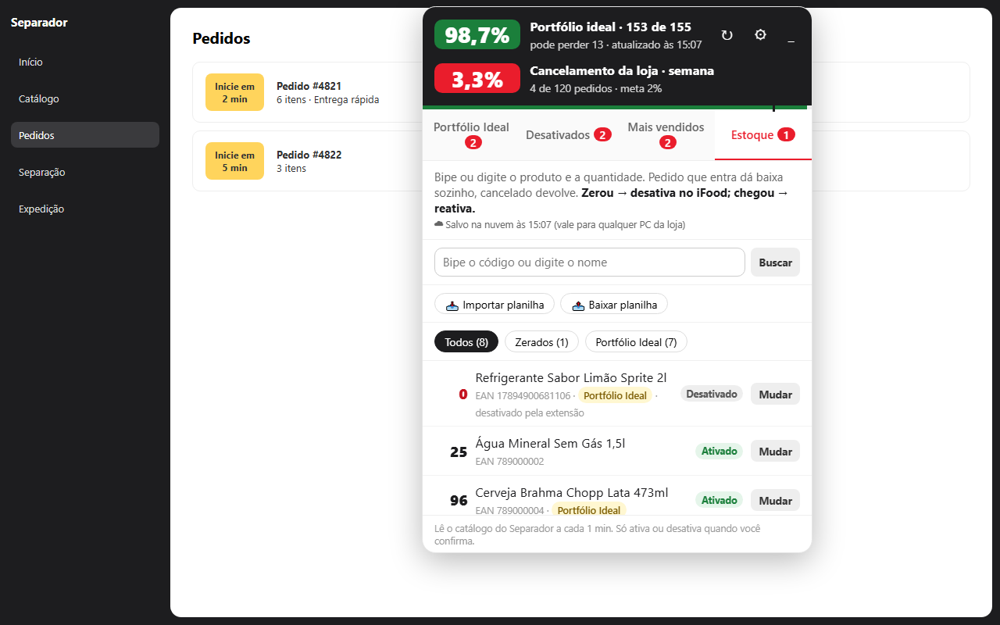
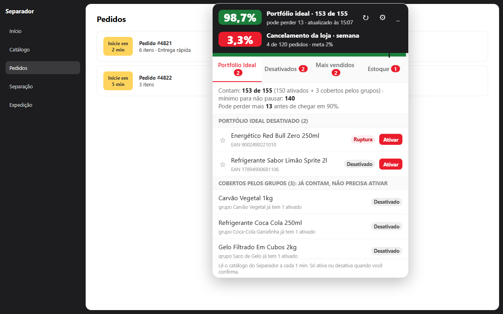
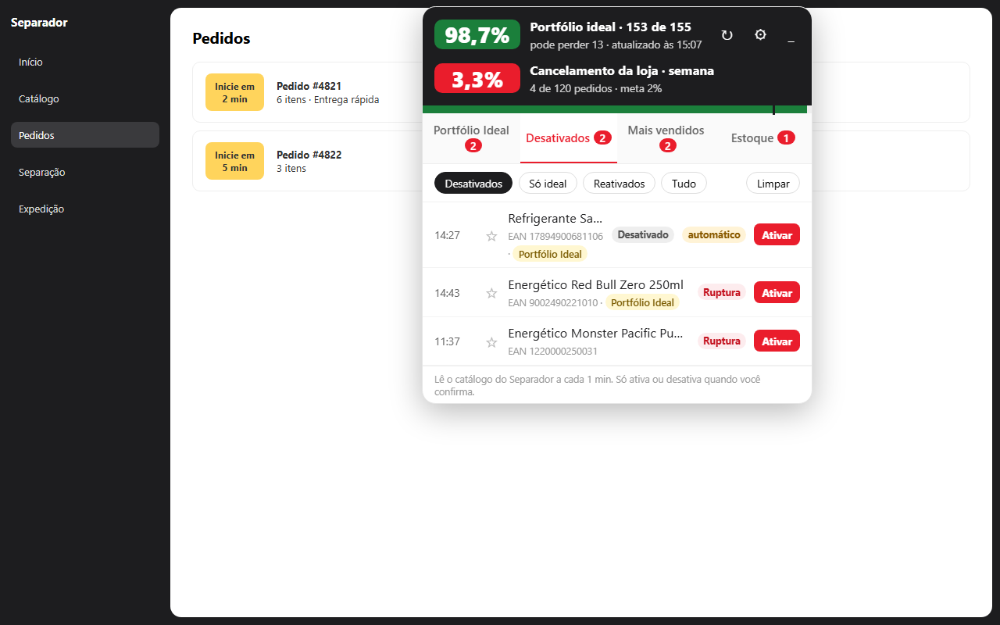
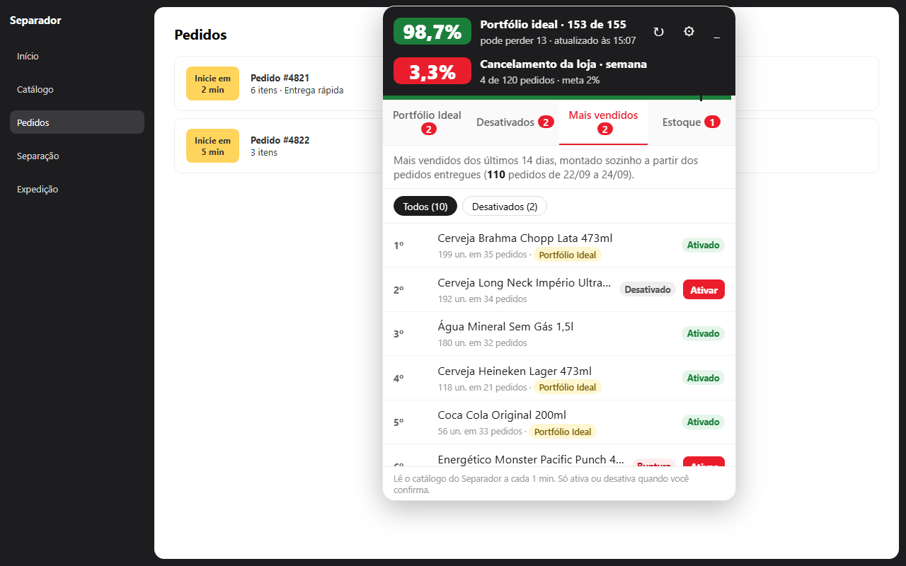

Seu catálogo do iFood em dia, sem ficar vigiando a tela.
Um painel dentro do App Separador que mostra o Portfólio Ideal ao vivo, desativa sozinho o produto que acabou no estoque e avisa em voz alta cada pedido novo.
7 dias grátis. Sem cartão e sem fidelidade.
Disponível naChrome Web Store
Veja funcionando (1 minuto)
Pedido entrando, separação iniciando sozinha, aviso em voz alta e o produto que zerou sendo desativado no iFood. Dados de exemplo.
Tudo o que a loja precisa acompanhar, num lugar só
O painel fica por cima do App Separador e lê as mesmas informações que a loja já vê, a cada minuto. Você não precisa trocar de tela nem instalar outro sistema.
Portfólio Ideal ao vivo
A porcentagem certa, já com a regra dos grupos, quantos itens ainda pode perder antes dos 90% e a lista exata do que ativar.
Estoque que desativa sozinho
Cada pedido dá baixa. Zerou, o produto é desativado no iFood; chegou mercadoria, volta sozinho. Adeus cancelamento por falta de produto.
Pedido novo em voz alta
Avisa quando entra pedido, com os itens e as quantidades. Se quiser, já inicia a separação sozinho.
Mais vendidos
Ranking montado sozinho com os pedidos dos últimos 14 dias, mostrando qual campeão de venda está desativado.
Desativados com hora
Anota quando cada produto saiu do ar ou entrou em ruptura, e avisa na hora quando cai um item importante.
Cancelamento da semana
Só o que foi culpa da loja, de segunda até hoje, comparado com a meta de 2%. Cancelamento do cliente não entra.
Produto sem estoque ativado vira cancelamento
É o famoso "catálogo sem gestão". O Assistente cuida disso por você:
- Bipe os produtos que quer controlar ou importe uma planilha do Excel.
- Cada pedido que entra dá baixa sozinho. Pedido cancelado devolve.
- Chegou a zero: o produto é desativado no iFood e o painel avisa.
- Deu entrada na mercadoria: ele volta a ser ativado.

Veja como fica na tela
Imagens com dados de exemplo.


Começa em 2 minutos
Funciona no Chrome do computador onde a loja usa o App Separador. Veja o passo a passo completo.
Instale no Chrome
Clique em "Instalar no Chrome" e depois em "Usar no Chrome".
Abra o App Separador
O painel aparece sozinho e pede o e-mail da loja.
Use 7 dias grátis
Tudo liberado. Em outro computador da loja, é só usar o mesmo e-mail.
Um preço só, tudo incluído
Sem taxa de adesão e sem fidelidade. Pagamento pelo PIX, direto na tela da extensão.
- Portfólio Ideal, desativados, mais vendidos e cancelamento
- Estoque na nuvem, igual em todos os computadores da loja
- Aviso de pedido novo em voz alta
- Suporte pelo WhatsApp
Dúvidas
Não achou a resposta? Chame no WhatsApp.
Precisa de algum outro sistema?
Não. Basta o Chrome e o App Separador que a loja já usa. O estoque fica guardado na nuvem do Assistente.
Funciona em mais de um computador?
Sim. Instale nos computadores da loja e use o mesmo e-mail. Estoque, opções e histórico aparecem iguais em todos.
A extensão mexe nos meus produtos sozinha?
Só se você ligar. Ativar e desativar pelo painel pede confirmação. O estoque automático e o início automático da separação vêm desligados e você liga quando quiser. Separar e bipar os itens continua com a loja.
E os dados dos meus clientes?
Não saem do seu computador. O Assistente usa só os produtos e as quantidades dos pedidos. Veja a política de privacidade.
É do iFood?
Não. É uma ferramenta independente, feita por uma loja parceira para facilitar o dia a dia de quem usa o App Separador.
Como cancelo?
É só não renovar. Não tem fidelidade nem multa.